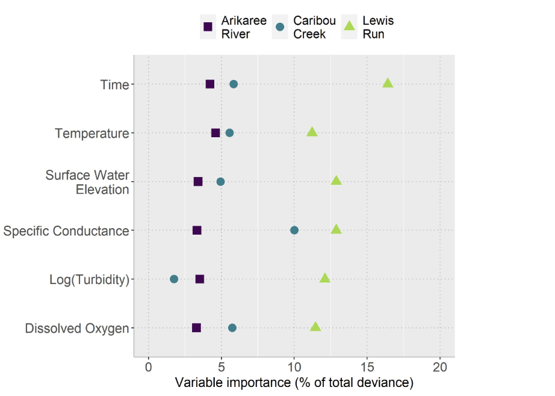
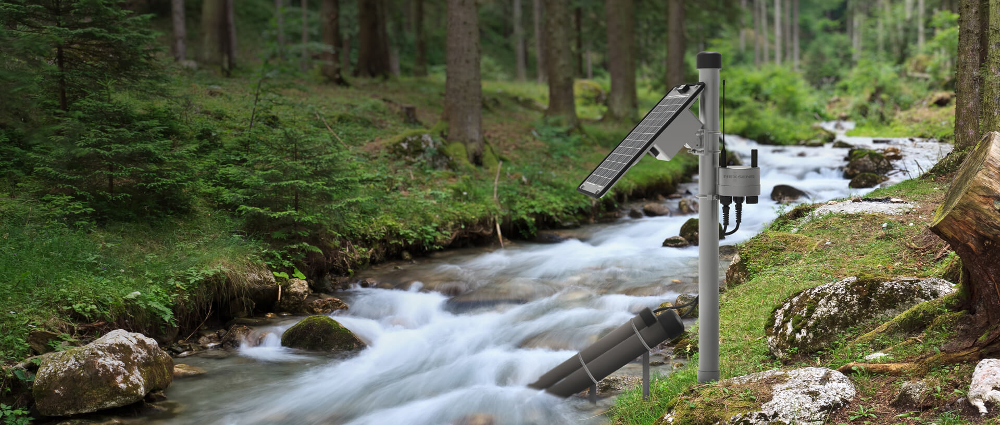

Rivers change constantly, and keeping track of their health is never easy. Nitrate, a nutrient that plays a crucial role in freshwater ecosystems, can quickly shift from being useful to harmful. When levels rise, it can trigger algal blooms, reduce oxygen in the water, and damage aquatic life. Monitoring nitrate directly is also difficult since sensors are expensive and manual sampling only provides snapshots in time. This raises an important question. Can nitrate dynamics be understood by looking at other water-quality indicators instead, and what would this mean for river monitoring in the future?
Nitrate enters rivers through both natural and human-driven processes. Groundwater, rainfall, and organic matter contribute naturally, while fertiliser use, urban development, and fossil fuel emissions push concentrations even higher. Human activity has therefore made consistent monitoring more important than ever. Current methods remain costly and often fail to capture how quickly river conditions change. As a result, approaches that balance accuracy with practicality are needed, making this study particularly relevant.
In recent years, in-situ sensors have made it possible to measure many water-quality variables in real time, such as temperature, turbidity, dissolved oxygen, and conductivity. These sensors generate high-volume datasets, and the large amount of information creates challenges for cleaning and analysis. As part of this process, gaps, outliers, and noisy values often need to be removed to avoid misleading results. In addition, after testing for multicollinearity, strongly correlated variables such as pH and chlorophyll-a were excluded. With these steps complete, the study placed its focus on five indicators that were both reliable and practical for monitoring: temperature, dissolved oxygen, turbidity, specific conductance, and water level. These indicators formed the foundation for the modelling that followed.
Building on this prepared dataset, Kermorvant et al. (2023) investigated whether the five indicators could explain nitrate dynamics across very different climate zones. The analysis drew on data from the U.S. National Ecological Observatory Network and examined three rivers that represent contrasting conditions:
Arikaree River, Colorado is a semi-arid watershed with grasslands and agriculture
Caribou Creek, Alaska is a subarctic catchment with taiga and permafrost
Lewis Run, Virginia is a temperate stream influenced by agriculture and urbanisation
The modelling combined generalised additive mixed models (GAMM) with an ARIMA error structure in order to account for nonlinear relationships and temporal patterns.
Figure 1 shows how the five indicators contributed differently across the three rivers. Across all three rivers, the five indicators explained about 99 percent of nitrate variation. While the contribution of each indicator differed between rivers, the same set consistently proved reliable.
| Site | Model | aAIC |
|---|---|---|
| Arikaree | GAM | 6044 |
| Arikaree | GAMM with ARIMA | -44631 |
| Caribou | GAM | 76871 |
| Caribou | GAMM with ARIMA | 40814 |
| Lewis Run | GAM | 10962 |
| Lewis Run | GAMM with ARIMA | -13042 |
Table 1 confirms that GAMM with ARIMA residuals consistently performed better than simpler GAM models, showing that including temporal structure strengthened the analysis.
These findings answer the question raised at the beginning. Nitrate dynamics can indeed be explained through other water-quality indicators without relying only on costly sensors. By focusing on five indicators, managers can design monitoring programs that are more cost-effective and transferable across very different rivers.
In conclusion, Kermorvant et al. (2023) demonstrated that nitrate dynamics are driven almost entirely by five water-quality indicators within an additive modelling framework. This makes it possible to track rivers in ways that are reliable, affordable, and adaptable across diverse environments.
References
Kermorvant, C., Liquet, B., Litt, G., Mengersen, K., Peterson, E. E., Hyndman, R. J., Jones, J. B., & Leigh, C. (2023). Understanding links between water-quality variables and nitrate concentration in freshwater streams using high frequency sensor data. PLOS ONE, 18(6). https://doi.org/10.1371/journal.pone.0287640